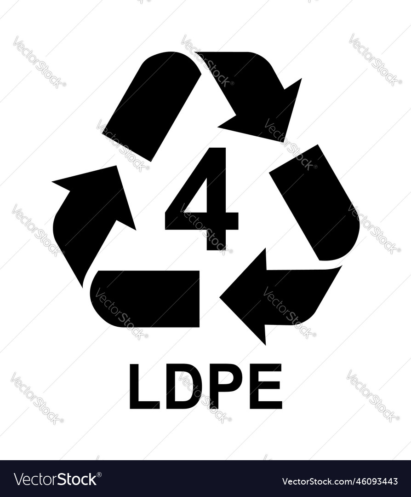

POLIETILENO DE BAJA DENSIDAD

El polietileno de baja densidad (LDPE) es un termoplástico hecho del monómero etileno. Fue el primer grado de polietileno, producido en 1933 por Imperial Chemical Industries (ICI) mediante un proceso de alta presión mediante polimerización por radicales libres.1? Su fabricación sigue empleando el mismo método. La EPA estima que el 5,7 % del LDPE (código de identificación de resina 4) se recicla en los Estados Unidos.2? A pesar de la competencia de los polímeros más modernos, el LDPE continúa siendo un grado plástico importante. En 2013, el mercado mundial de LDPE alcanzó un volumen de aproximadamente 33 000 millones de USD.3?
A pesar de su designación con el símbolo de reciclaje, no se puede reciclar tan comúnmente como los plásticos